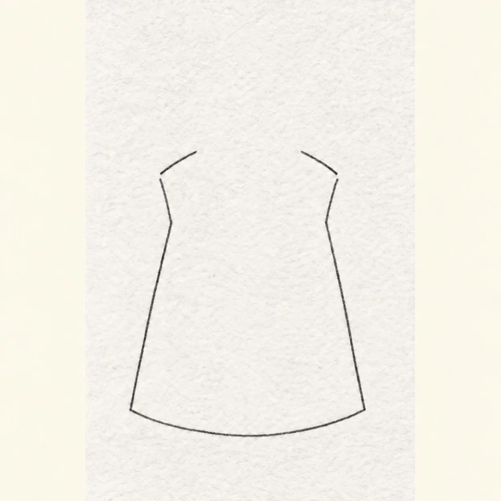
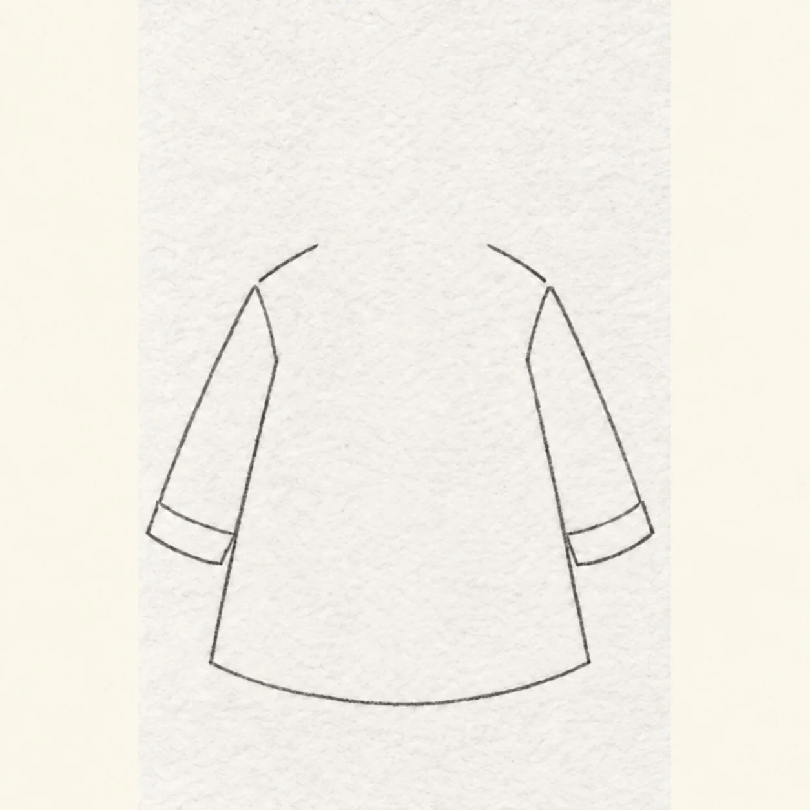
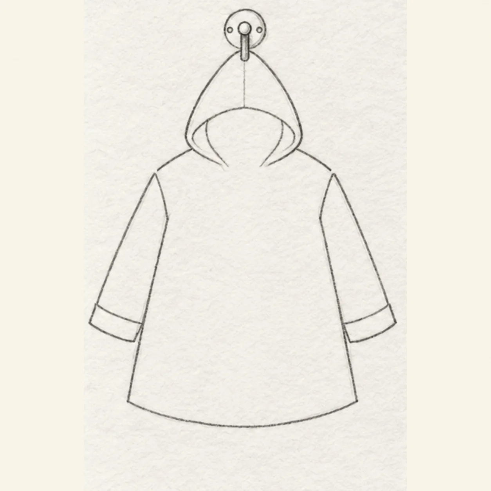
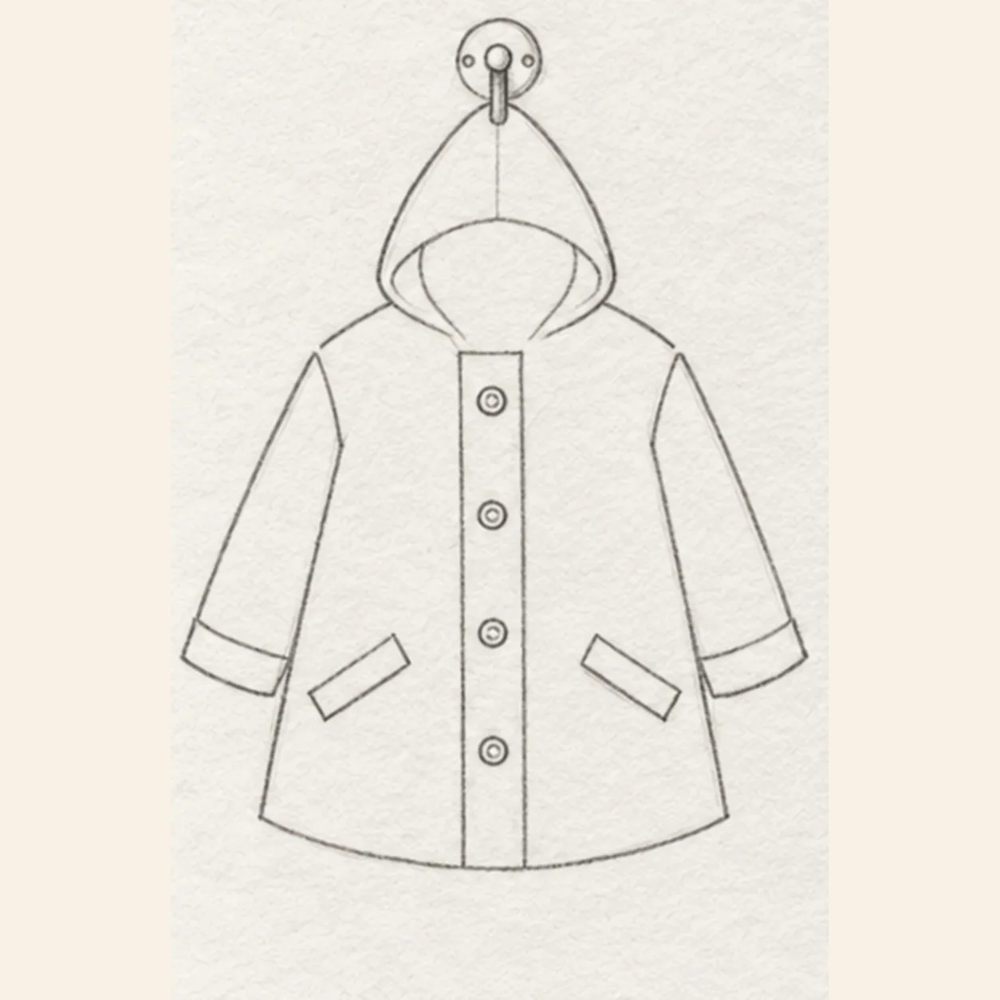
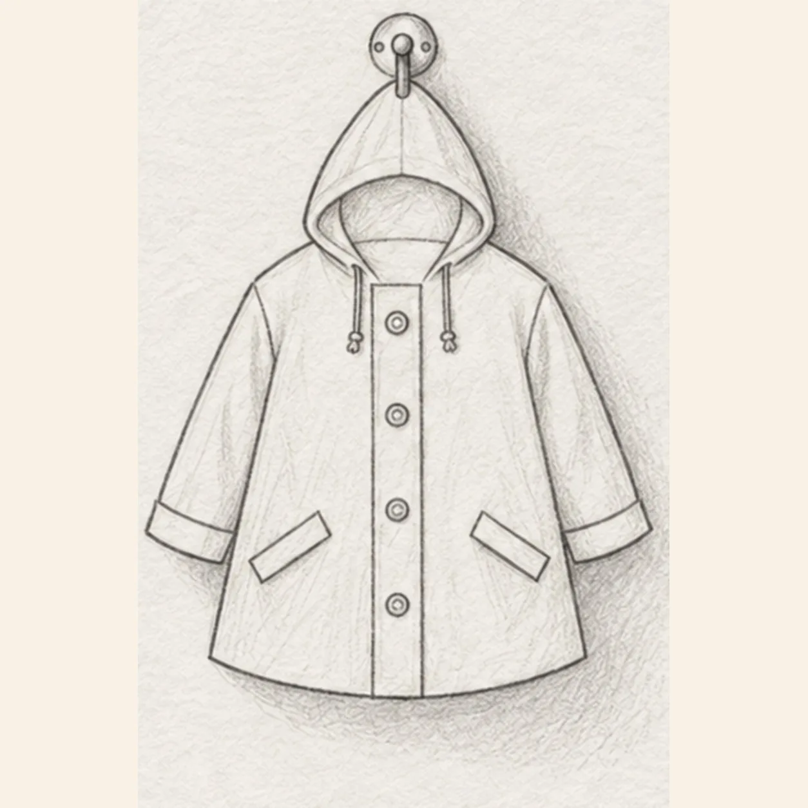

Pencil ready?
Let's draw a raincoat on a wall hook
Treat this as one small practice round: build the subject lightly, notice the shapes, then darken only the lines that help the finished sketch.
-
01

Map the coat body
With light HB pressure, place two short shoulder slopes on either side of a wide empty neckline. Leave a small break below each shoulder for the sleeves, then draw the two sides flaring gently to a shallow curved hem. Keep the body interior blank.
Sketch tip: Compare the two lower corners before closing the hem. Leave space between the shoulder starts so the hood can fit later.
-
02

Attach the loose sleeves
From the left shoulder gap, pull a loose sleeve down and left to a short cuff, then return its inner edge to the existing left underarm. Mirror that move on the right without moving either side seam or the hem.
Sketch tip: Let each sleeve droop from its shoulder, then reconnect at the existing underarm; keep the original body side seams and hem in place.
-
03

Set the hood and peg
Above the empty neckline, draw a softly pointed outer hood that meets the two inner shoulder starts. Add a smaller open U-shaped rim and one faint center seam inside the hood. Center a small round wall plate and short downward peg above the hood tip; keep the hood interior mostly white.
Sketch tip: Keep the peg centered above the empty neckline. Leave the hood interior open for shading and drawstrings in later steps.
-
04

Draw the fastening and pockets
From below the hood opening, draw two close placket lines down to the hem. Space four small button circles inside it. Add one slanted pocket flap on each lower side, keeping both outside the placket and clear of the sleeves.
Sketch tip: Space the four buttons before darkening them. Keep each pocket flap outside the center placket and below its sleeve.
-
05

Add cords, folds, and shadow
Drop one short cord from each side of the hood rim, add a short inner-hood fold, then place a few brief creases below the shoulders and pockets. Shade lightly beneath and to the right of the coat; keep all keeper contours fixed.
Sketch tip: Use short fabric marks instead of outlining every fold. Keep the wall shadow faint so the coat stays the focus.
-
06
Shade the finished raincoat
Deepen selected existing hood, cuff, placket, and pocket edges. Layer soft mustard-yellow pencil over the hood, body, and sleeves, leaving paper highlights on the folds; preserve the peg, four buttons, two pockets, cords, and wall shadow exactly where drawn.
Sketch tip: Build yellow in two light layers and leave flecks of paper visible. The peg and four buttons should still read clearly at thumbnail size.